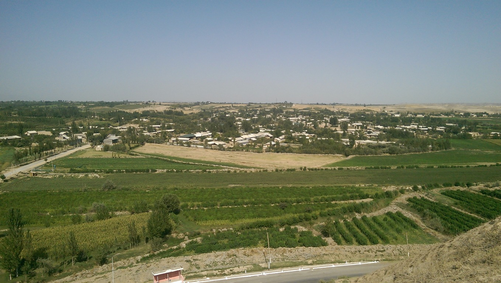
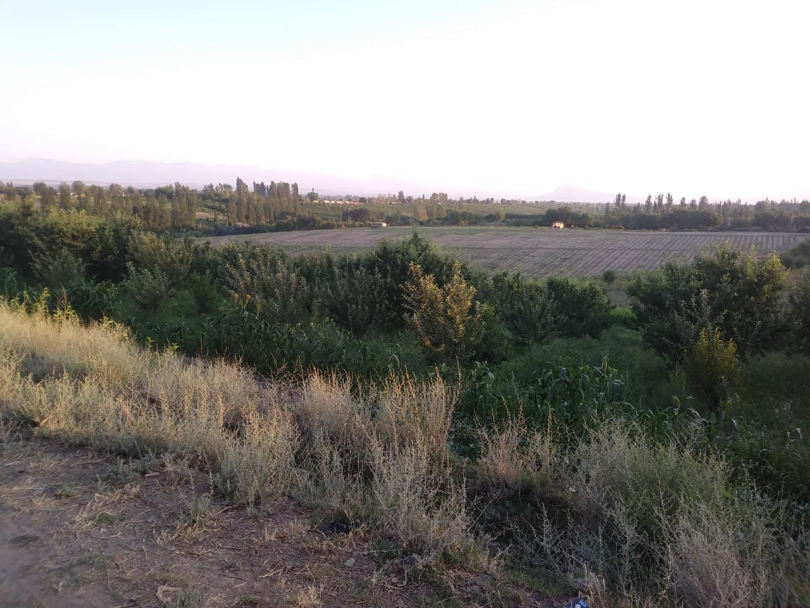
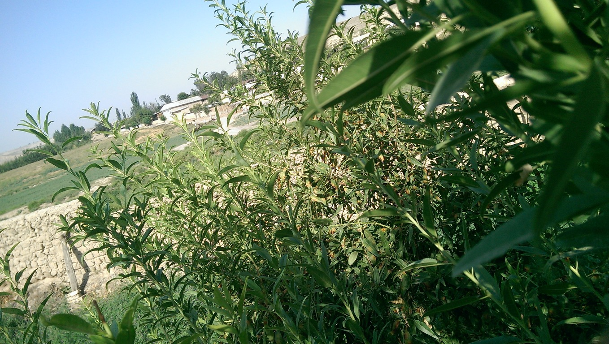
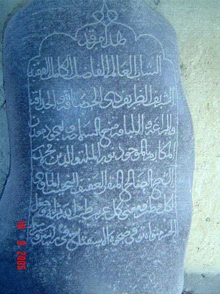
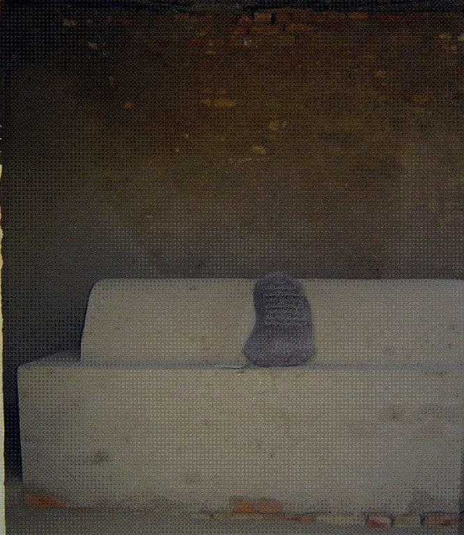

Qishlog`imiz tarixi



Qishlog`imiz haqida
Qishloq asosan to`rtta mahallaga bo`lingan:
1. Guldirov mahallasi - qishloqning markazida joylashgan bo`lib, yuqorida ta`kidlanganidek, eng ko`p buloqlar oqib chiqadigan manzil. Maktab, savdo do`konlari, bog`cha shu mahalla hududida.
2. Soy mahalla - qishloqdagi eng katta soyning har ikki tomonida joylashgan. Bahorgi yog`ingarchilik paytlari juda ko`p sel keladi. Ana shu selxonalarni Soy deb atash rasm bo`lgan. Shuning uchun ham Soyda suv doimo oqmaydi.
3. To`damayiz mahallasining nomi ham suv bilan bog`liq. Bu joyda qir etaklaridan o`nlab buloqlar oqib chiqadi. Buloqlarda sumbullar, suv ichidagi toshlarda mayizga o`xshash suv o`tlari to`p-to`p bo`lib o`sadi. SHu sababli bu mahallani To`damayiz deb atashadi.
4. Buloq mahallasi - Birlashgan qishlog`idan keladigan katta selxona - soyning ikki tomonida joylashgan. Bu erdagi aholi asosan buloq va korizlarning suvlaridan foydalanishadi. Bu mahallada ham bir necha buloq va korizlar mavjud. Shuningdek, bu yerga To`damayiz mahallasidan ikkita ariq oqib keladi.
Sadamozor ziyoratgohi

